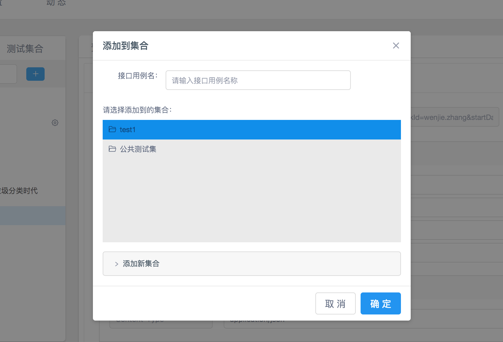

介绍 #
测试集是接口用例的集合。接口用例用来保存接口运行请求参数，方便我们下次再测试接口，无需再填请求参数。
添加测试集 #
添加测试集，我们可以创建个人测试集、环境测试集或者功能测试集等等。每个测试集只是接口用例的集合，可以按照任何维度去创建。
项目接口页面，测试集合 tab 下面『加号』按钮添加测试集。

添加测试集必须填写集合名，然后可以选填集合简介。

添加接口用例 #
当我们在运行、调试某个接口时，为了把当前的测试请求数据保存下来，方便下次测试。我们可以将接口当前的测试数据，保存为该接口的测试用例。
在接口运行页面，点击保存按钮，添加接口用例。

然后选择用例需要添加到的集合。如何还没有集合，可以新建。

查看接口用例 #
添加完用例，我们可以在接口集合 tab 下面看到，当前项目的所有测试集合和接口用例。接口用例和接口运行一样，只不过默认带上了一些请求参数。